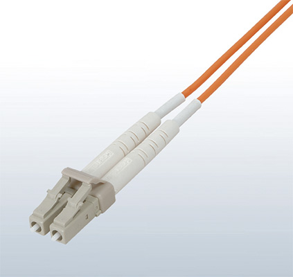

Network-related products |
Programmable Controllers MELSEC
Rangkaian CC-Link IE


Pilihan
Pusat peralihan industri
Didukung oleh CONTEC
- Mendukung kecepatan transmisi 10 Mbps/100 Mbps/1 Gbps
- Dilengkapi dengan Auto MDI/MDI-X dan fungsi negosiasi otomatis
- Menghemat konsumsi daya hingga 60%*2 dengan menggunakan fungsi penyesuaian daya otomatis
- Beroperasi pada suhu sekitar 0 hingga 50°C, dengan konfigurasi tanpa kipas
- Kompatibel dengan pemasangan rel DIN, yang memungkinkan hub dipasang dalam berbagai orientasi
- *1.Tegangan masukan terukur adalah 12 hingga 24 V DC.
- *2.Sebagai perbandingan, konsumsi daya diukur saat semua 8 port digunakan dan tidak digunakan.
Produk ini dikembangkan dan diproduksi oleh Contec Co. Ltd. Harap diperhatikan bahwa spesifikasi dan ketentuan garansi berbeda dari produk Seri MELSEC.
Sakelar CC-Link IE yang dikelola
- Mendukung kecepatan transmisi 10 Mbps/100 Mbps/1 Gbps
- Dapat dihubungkan ke perangkat CC-Link IE dan Ethernet secara bersamaan
- Topologi redundan gaya ERP dan LA antara sakelar melanjutkan komunikasi saat terjadi kegagalan jaringan termasuk pemutusan kabel, dengan mengganti jalur jaringan
- Dengan transceiver SFP*4, kabel optik jarak jauh, yang ideal untuk sistem yang memerlukan komunikasi telepon rumah antar-fasilitas tersedia
- Mendukung VLAN dan dapat mengelola beberapa jaringan dengan satu sakelar
- Mendukung SNMP, yang memungkinkan pemantauan seluruh jaringan dan identifikasi area yang rusak dengan mudah (pemeliharaan sistem ditingkatkan dengan ini fitur)
- *3.Tegangan input terukur adalah 24 V DC.
Menggunakan jaringan Ethernet
Satu sakelar CC-Link IE yang dikelola dapat dihubungkan ke jaringan CC-Link IE dan Ethernet secara bersamaan tanpa memerlukan konfigurasi jaringan khusus
Topologi redundan ERP
Jalur jaringan redundan antara sakelar memungkinkan sistem untuk terus beroperasi jika terjadi kegagalan
Ketika terjadi kesalahan, komunikasi dibangun kembali
melalui jalur jaringan alternatif (dalam 10 ms)
SFP untuk komunikasi jarak jauh
Dengan fitur transmisi data jarak jauhnya, kabel optik ideal untuk komunikasi jarak jauh antar fasilitas
- *4.Baik port optik (OPT1/OPT2) maupun port RJ45 (P1/P2) dapat digunakan pada satu waktu.
Beberapa jaringan dengan VLAN
Satu switch dapat terhubung ke beberapa jaringan CC-Link IE
Produk Mitra FA
Mitsubishi Electric System & Service
Untuk keterangan lebih lanjut tentang produk Mitsubishi Electric System & Service Co., Ltd., silakan hubungi kami melalui email.
<Kantor Penjualan> DIVISI PRODUK FA
email:osb.webmaster@melsc.jp
Pusat peralihan industri
 *5
*5


- Kompatibel dengan kecepatan transmisi 10 Mbps/100 Mbps/1 Gbps
- Unit berukuran ringkas dengan 5 port
- Mendukung 12 V DC hingga 48 V DC dengan rentang tegangan lebar. Dua input catu daya (catu daya redundan) dimungkinkan
- Mendukung topologi jaringan kombinasi line, star, line, dan star
- Mematuhi standar UL/CE/FCC yang memungkinkan ekspor ke Eropa dan Amerika Utara
- *5.Perangkat Kelas A
Hanya CC-Link IE Field Network Basic
- Mendukung CC-Link IE Field Network Basic
- Kompatibel dengan kecepatan transmisi 10 Mbps/100 Mbps
- Unit berukuran ringkas dengan 5 port dan 8 port
- Mendukung rentang tegangan lebar 12 V DC hingga 48 V DC
- Mematuhi standar UL/CE/FCC yang memungkinkan ekspor ke Eropa dan Amerika Utara
Hanya CC-Link IE Field Network Basic
- Mendukung CC-Link IE Field Network Basic
- Kompatibel dengan kecepatan transmisi 10 Mbps/100 Mbps
- Unit berukuran ringkas dengan 5 port
- Mendukung 10 V DC hingga 30 V DC dengan rentang tegangan lebar. Dua input catu daya (catu daya redundan) dimungkinkan
- Mematuhi standar UL/CE/FCC yang memungkinkan ekspor ke Eropa dan Amerika Utara
Ethernet cable
- Sesuai dengan Standar 1000BASE-T. Kabel Ethernet dengan pelindung ganda ini memiliki kinerja pelindung yang luar biasa
- Tersedia dalam panjang mulai dari 1 m hingga 100 m (dengan penambahan 1 m). Untuk penggunaan di area bergerak dalam ruangan, panjang yang tersedia adalah dari 1 m hingga 45 m. Tersedia juga dalam panjang kurang dari 1 m
| Item | SC-E5EW-S□M*6 | SC-E5EW-S□M-MV*7 | SC-E5EW-S□M-L*8 |
|---|---|---|---|
| Cable type | Category 5e or higher, (double shielded/STP) Straight cable | ||
| Number of core wires | 8 wires (4 twisted pairs) | ||
| Double shield | Aluminum/polyester tape, Tin-plated annealed copper wire braid | ||
| Installation environment | Indoor | Indoor movable | Indoor/outdoor |
| Finished outside diameter | Flame retardant PVC, 6.8 mm | Flame retardant PVC, 6.5 mm | LAP sheath, 10 mm |
| Connector | RJ-45 connector with shield, straight connection | ||
| Conforming standards | IEEE802.3 1000BASE-T ANSI/TIA/EIA-568-B (Category 5e) ISO/IEC 11801 |
||
- *6.“□” pada nama model menunjukkan panjang kabel (0,5 m, dari 1 m hingga 100 m dengan kelipatan 1 m).
- *7.“□” pada nama model menunjukkan panjang kabel (0,1 m, 0,2 m, 0,3 m, 0,5 m, dari 1 m hingga 45 m dengan kelipatan 1 m).
- *8.“□” dalam nama model menunjukkan panjang kabel (dari 1 m hingga 100 m dengan kelipatan 1 m).
Kopler sebaris
- 8 konduktor RJ-45 female to female, berpelindung, cocok dengan pelat dinding Keystone tipe standar
- Dapat digunakan di panel patch, soket dinding, atau untuk memperpanjang panjang kabel
| Item | Spesifikasi |
|---|---|
| Adaptable connector | RJ-45 connector with shield |
| Operable temperature | -10…60°C |
| Conforming standards | IEEE 802.3 1000BASE-T ANSI/TIA/EIA-568-B (Category 5e) ISO/IEC 11801 |
Konverter media industri
- Mengonversi 1000BASE-T/100BASE-TX ke 1000BASE-LX/SX dan sebaliknya dapat memperluas jarak antar stasiun (DMC-1000TL-DC: maksimum 10 km, DMC-1000TS-DC: maksimum 550 m)
- Kinerja kekebalan terhadap kebisingan yang ideal untuk lingkungan FA memastikan penggunaan sebagai tindakan pencegahan kebisingan/penerangan untuk melindungi jalur komunikasi
- Mematuhi standar UL/CE/FCC yang memungkinkan ekspor ke Eropa dan Amerika Utara
Contoh aplikasi (DMC-1000TL-DC)
Spesifikasi*9
| Item | DMC-1000TL-DC | DMC-1000TS-DC | |
|---|---|---|---|
| Conforming standard | IEEE802.3z (1000BASE-LX) |
IEEE802.3z (1000BASE-SX) |
|
| Compatible cable |
Type | 1000BASE-LX compatible single mode optical cable |
1000BASE-SX compatible Multi-mode optical cable (core/clad: 50/125 µm Band: 500 MHz·km or higher λ = 850 nm) |
| Connector | Double LC connector (IEC 61754-20) | ||
| Method for connection |
Crossing (A to B, B to A) | ||
| Transmission distance | Max. 10 km | Max. 550 m | |
- *9.Spesifikasi yang dijelaskan adalah tentang konfigurasi menggunakan kabel optik saja. Untuk keterangan lebih lanjut, silakan lihat manual produk terkait.
Kabel optik
- QP-AW terbuat dari bahan plastik yang memiliki karakteristik antipecah*10 dan lentur yang unggul*11
- Beragam pilihan mendukung lingkungan yang serbaguna. Produk yang direkomendasikan CC-Link Partner Association
- Kabel untuk penggunaan dalam dan luar ruangan bebas dari anggota tegangan, dan memiliki tegangan yang diizinkan setara dengan jenis yang diperkuat untuk penggunaan luar ruangan yang memungkinkannya ditarik secara langsung
- QG-BU untuk penggunaan dalam ruangan mendukung kabel yang kompatibel dengan UL Listed (UL Type OFNR) yang tahan api tinggi yang telah lulus Uji Api Riser UL1666
- Kabel untuk penggunaan luar ruangan jenis yang diperkuat kedap air, dan dapat digunakan bahkan di area yang tergenang atau terendam sementara
- Selubung konektor dengan karakteristik tekukan yang ditingkatkan mengurangi kemungkinan putusnya serat pada dasar konektor

LCF connector
Duplex LC connector
(IEC 61754-20)
| Model | QP-AW*12 | QG-AW | QG-B | QG-BU | QG-VCT | QG-C | QG-DL | |||
|---|---|---|---|---|---|---|---|---|---|---|
| Operating environment/ application |
In the control panel |
In the control panel |
Indoor | Indoor, UL approved |
Indoor, movable |
Outdoor | Outdoor, reinforced (water shielding) |
|||
| Max. cable length | 10 m | 550 m | ||||||||
| Optical fiber types | Multi-mode optical fiber (GI) | |||||||||
| Material/ outer diameter |
Core | Plastic/ 55 ± 5 µm |
Fused quartz/50 ± 3 µm | |||||||
| Clad | Plastic/ 490 ± 5 µm |
Fused quartz/125 ± 2 µm | ||||||||
| Code jacket |
Material | PVC (blue) | PVC (orange) | |||||||
| Outer diameter |
Ø2.0 mm × 2 |
Ø2.0 mm × 2 |
Ø2.0 mm × 2 |
Ø1.8 mm × 2 |
Ø2.0 mm × 2 |
Ø2.0 mm × 2, 4, 6, 8 |
||||
| Cable jacket |
Material | - | - | Flame retardant PE (orange) |
Flame retardant PVC (blue) |
Elastic PVC (orange) |
Flame retardant PE (black) |
LAP sheath (black) |
||
| Outer diameter |
- | - | Ø6.0 mm | Ø5.0 mm | Ø6.0 mm | 2, 4 cores | 10.0 mm | |||
| 6 cores | 11.0 mm | |||||||||
| 8 cores | 12.0 mm | |||||||||
| Operable temperature range | -20…60°C | |||||||||
| Adaptable connector | LCF connector*13, SC connector*12, FC connector*12 | |||||||||
- *10.Tegangan yang diizinkan sekitar dua kali lipat dari QG-AW.
- *11.Radius tekukan yang diizinkan sekitar 1/2 kali lipat dari QG-AW.
- *12.QP-AW tidak mendukung hal berikut.
• Konektor SC, FC
• Pemrosesan konektor di lokasi, sambungan fusi
• Sambungan sambungan konektor
• Konverter media dan terminal koneksi - *13.Gunakan konektor LCF untuk koneksi ke produk CC-Link IE Controller Network. (Konektor LCF: dua konektor LC tersambung) Saat memasang kabel optik yang kompatibel dengan CC-Link IE Controller Network, harap lihat manual instalasi CC-Link Partner Association.
Aksesori standar: Tempat pelindung*14
(Satu tempat pelindung disertakan per kabel.)
Fitur
- Melindungi dasar konektor kabel dan mencegah kerusakan
- Menjaga radius tekukan minimum
- Menghemat ruang di panel kontrol (60 mm atau kurang dari bagian depan pengontrol yang dapat diprogram hingga ujung dudukan pelindung)
- *14.Dudukan pelindung ini didedikasikan untuk Mitsubishi Electric System & Service Co., Ltd. Dudukan pelindung tidak tersedia sebagai satu unit. Dudukan ini tidak dapat digunakan dengan merek konektor LCF lainnya.
Alat penyisipan konektor
- Masukkan atau lepaskan konektor dengan mudah, bahkan di ruang sempit seperti panel kontrol yang padat
Konektor yang berlaku…konektor LCF/LC/SC/MU
Adaptor sambungan
- Memperpanjang kabel optik (Sambungan sambungan)
- Sambungan sementara untuk stasiun yang dapat diperpanjang nanti
Konektor yang berlaku
| Type | Model | Spesifikasi |
|---|---|---|
| Splice adapter for LCF Connector | SPAD-LCF-G50 | Splice adapter for LCF connector, multimode 2 cores Connection loss: 0.3 dB (with master fiber) |
| Splice adapter for SC Connector | SPAD-SCF-G50 | Splice adapter for SC connector, multimode 2 cores Connection loss: 0.3 dB (with master fiber) |
| Splice adapter for FC Connector | SPAD-FC-G50 | Splice adapter for FC connector, multimode 1 core Connection loss: 0.3 dB (with master fiber) |
SPAD-LCF-G50
Konverter media industri
- Jika jarak antar stasiun lebih dari 550 m, dua unit dengan kabel optik ini dapat memperpanjang jarak total antar stasiun hingga 15 km
- Dilengkapi dengan fungsi link pass through, konverter ini mendukung fungsi network loop-back jika terjadi pemutusan kabel
Contoh Aplikasi
Spesifikasi
| Item | DMC-1000SL-DC | ||
|---|---|---|---|
| OPT1 port | OPT2 port | ||
| Conforming standard | IEEE802.3z Gigabit Ethernet (1000BASE-LX) |
IEEE802.3z Gigabit Ethernet (1000BASE-SX) |
|
| Transmission format | Full duplex system | ||
| Compatible cable |
Optical fiber | 1000BASE-LX compatible single-mode optical cable |
1000BASE-SX compatible multi-mode optical cable*16 (core/clad 50/125 µm area 500 MHz·km or higher λ = 850 nm) |
| Connector | Duplex LC connector (IEC 61754-20 compliant) | ||
| Method for connection |
Crossing (A to B, B to A) | ||
| Power supply specification | 20.4…26.4 V DC (Power supply terminal block) | ||
| Standards | UL, CE, FCC Part15 Class B, VccI Class B | ||
| Max. number of connectable devices between stations |
4 | ||
- *15.Kabel optik multi-mode juga dapat digunakan untuk koneksi. Jarak transmisi hingga 550 m.
- *16.Untuk menghubungkan ke produk CC-link IE Controller Network, gunakan kabel optik Mitsubishi Electric System & Service QG Series.
Terminal koneksi
- Memungkinkan penambahan hingga 3 stasiun di antara stasiun yang sudah ada
- Dengan stasiun yang dapat dengan mudah ditambahkan atau dihapus, kemudahan perawatan menjadi lebih baik
- Memungkinkan perluasan jaringan tanpa harus mengubah kabel yang sudah ada
- Dapat dipasang pada rel DIN atau dengan braket sekrup
Contoh konfigurasi komunikasi
Spesifikasi
| Item | Spesifikasi | |
|---|---|---|
| Applicable optical cable |
1000 BASE-SX (MMF)-compatible optical cable |
|
| Standard | IEC 60793-2-10 Types A1a.1 (50/125 µm multimode) |
|
| Transmission loss (max.) |
≤ 3.5 dB/km (λ = 850 nm) | |
| Transmission band (min.) |
≥ 500 MHz·km (λ = 850 nm) | |
| Model | QG Series*19 | |
| Applicable optical connector |
Duplex LC connector | |
| Standard | IEC 61754-20: Type LC connector | |
| Connection loss | ≤ 0.3 dB | |
| Polished face | PC polish | |
| Model | DLCF-G50-D2*19 | |
| Number of possible connections | Max. 3 units*17 | |
| Connection distance | Max. 150 m*20 | |
- *17.Setidaknya satu unit harus dihubungkan ke terminal koneksi.
- *18.Garis hitam pekat menunjukkan kabel dengan jarak maksimum 150 m. Jika ada stasiun yang mati, fungsi loop back akan tetap beroperasi.
- *19.Suku cadang disediakan oleh Mitsubishi Electric System & Service.
- *20.Panjang kabel dari SC-ECT-P3 ke titik koneksi lainnya.
Produk yang tercantum di sini diproduksi oleh Mitsubishi Electric System & Service Co., Ltd. Harap diperhatikan bahwa spesifikasi dan ketentuan garansi produk berbeda dari produk Seri MELSEC.